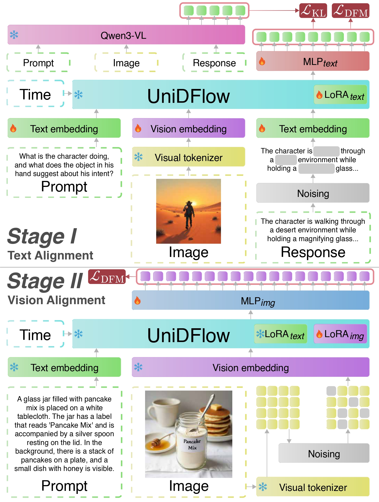
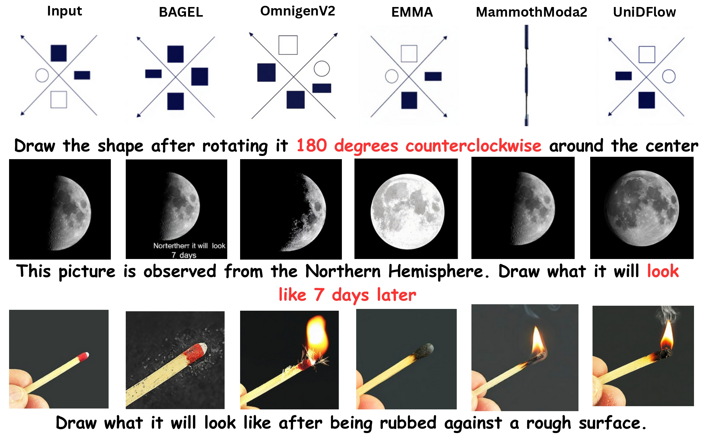
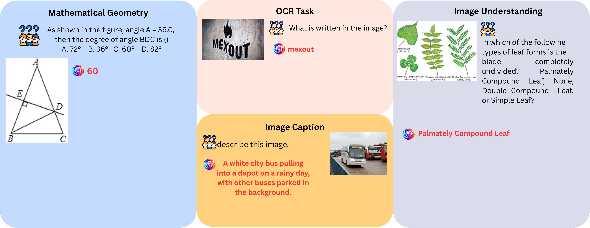

Best of Both Worlds: Multimodal Reasoning and Generation via Unified Discrete Flow Matching
Abstract
We propose UniDFlow, a unified discrete flow-matching framework for multimodal understanding, generation, and editing. It decouples understanding and generation via task-specific low-rank adapters, avoiding objective interference and representation entanglement, while a novel reference-based multimodal preference alignment optimizes relative outcomes under identical conditioning, improving faithfulness and controllability without large-scale retraining. UniDFlow achieves SOTA performance across eight benchmarks and exhibits strong zero-shot generalization to tasks including inpainting, in-context image generation, reference-based editing, and compositional generation, despite no explicit task-specific training.
Method
We implemented a rigorous three-stage training pipeline designed to bridge the gap between high-level reasoning and high-fidelity generation. By utilizing parameter-efficient adapters, we successfully repurposed a frozen vision-language backbone into a unified multimodal generator.
Stage I: Text Alignment (Reasoning Foundation)
In our first stage, we focused exclusively on multimodal understanding to establish a strong reasoning foundation.
- Objective: We aligned our frozen vision-language backbone to follow visual instructions using a discrete flow-matching objective.
- Mechanism: We introduced and trained specialized LoRAtext adapters while keeping the base model parameters frozen.
- Stabilization: To prevent "semantic drift" and ensure our model retained its original linguistic intelligence, we regularized the training with a KL divergence loss. This anchored our new diffusion-based reasoning to the model's original knowledge.
- Data: We utilized the MMInstruct dataset, training on approximately 1.0 million diverse image-prompt-answer examples.
Stage II: Vision Alignment (Generative Capability)
Once the reasoning foundation was set, we moved to Stage II to endow our model with the ability to synthesize images.
- Objective: We adapted the model for conditional generation within a discrete visual token space.
- Isolation: To avoid "objective interference," we kept our Stage I reasoning adapters frozen and introduced a separate set of LoRAimage adapters.
- Efficient synthesis: By operating in a discrete latent space, we enabled high-fidelity image synthesis that seamlessly integrates with the backbone's token-based architecture.
Stage III: Multimodal Preference Alignment (Refined Editing)
The final stage is where we unified these capabilities to master instruction-based image editing and complex reasoning tasks.
- Dynamic routing (MORA): We recognized that understanding and generation require different specializations; therefore, we implemented a Mixture-of-LoRA (MORA) router. This lightweight router dynamically composes our task-specific adapters at every step of the diffusion process.
- mRef-DPO alignment: We introduced a novel Reference-Based Multimodal Preference Alignment. By training on 3.5 million curated preference pairs, we taught the model to distinguish between faithful edits and subtle errors by comparing outcomes against a frozen reference policy and a visual reference image.
- Structured reasoning: We incorporated reflection traces into this stage, requiring the model to "think through" the editing process before generating pixels, which significantly improved its ability to handle geometric, physical, and temporal transformations.
Quantitative Results
Qualitative Results
Qualitative comparison of compositional text-to-image generation and editing. Prompts require precise grounding of attributes and spatial relations (red text). UniDFlow consistently adheres to these constraints while maintaining realistic structure and visual fidelity, outperforming prior unified baselines in fine-grained prompt alignment, even in more complex scenarios.

Image generation with UniDFlow.
Reasoning-driven image editing, highlighting temporal, geometric, and physical transformations handled by UniDFlow.

Image-to-text generated results with UniDFlow.
Additional complex reasoning tasks with UniDFlow.
BibTeX
@article{susladkar2026best,
title={Best of Both Worlds: Multimodal Reasoning and Generation via Unified Discrete Flow Matching},
author={Susladkar, Onkar and Prakash, Tushar and Deshmukh, Gayatri and Nguyen, Kiet A and Zhang, Jiaxun and Juvekar, Adheesh and Bao, Tianshu and Chai, Lin and Mittal, Sparsh and Dhillon, Inderjit S and others},
journal={arXiv preprint arXiv:2602.12221},
year={2026}
}